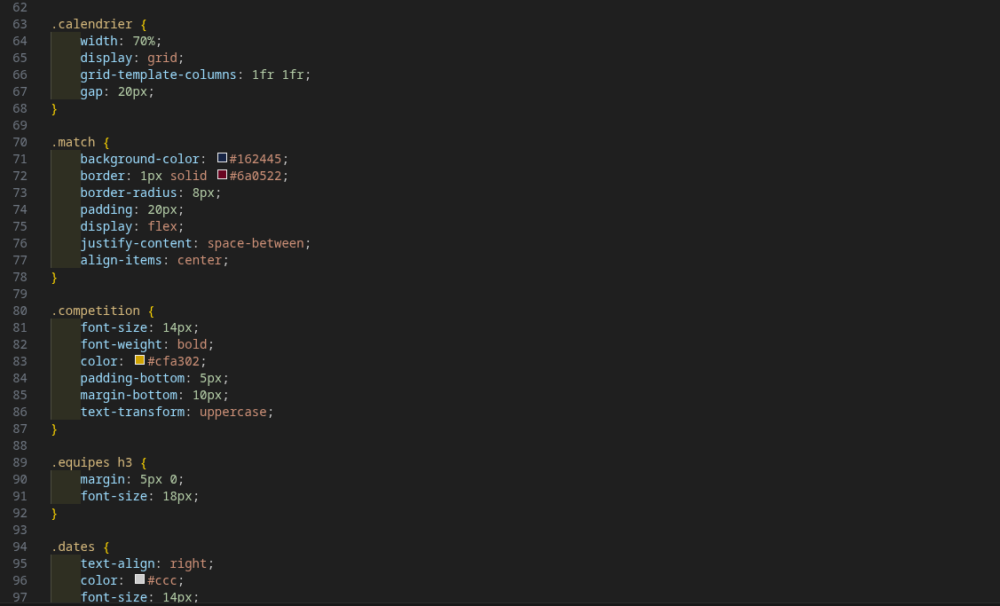

Étudiant en
BUT Réseaux & Télécoms
Je m'appelle Abdelmounim Ahmed, j'ai 19 ans. Bienvenue sur mon portfolio. Ce site retrace mon évolution, mes projets (SAÉ) et mes apprentissages réalisés lors de cette première année.

Abdelmounim Ahmed
Étudiant en BUT R&T (1A)
IUT Grand Ouest Normandie, Ifs
Présentation Générale
J'ai 19 ans et j'étudie actuellement en BUT Réseaux et Télécommunications. J'ai choisi cette filière car le fonctionnement des infrastructures réseaux et la manière dont les données circulent m'intéressent beaucoup. Cette première année a été l'occasion d'acquérir de bonnes bases pratiques via les Situations d'Apprentissage et d'Évaluation (SAÉ).
Ce qui me plaît dans ce domaine, c'est la logique et la rigueur que ça demande. À côté de ça, j'ai aussi une expérience professionnelle dans la vente. Cela m'a appris à écouter, à être responsable et à m'adapter facilement aux gens et aux imprévus, des qualités utiles pour travailler en équipe sur des projets techniques.
Savoirs Techniques
- Modèle OSI et protocoles TCP/IP
- Câblage et adressage IP
- Bases en Python
- Bases en Web (HTML/CSS)
- Anglais technique lié aux réseaux
Savoir-être
- Travail en équipe
- Curiosité technique
- Rigueur et ponctualité
- Bon relationnel
- Capacité d'adaptation
Mon Projet Professionnel
Intégrer une école d'ingénieurs
Après mon BUT, mon objectif est d'intégrer une école d'ingénieurs spécialisée dans les réseaux ou les télécoms. J'aimerais vraiment mettre en pratique ce que j'apprends à l'IUT sur le terrain. Mon but est de développer de solides compétences techniques pour pouvoir, à terme, gérer de vrais projets d'infrastructures.
Mes SAÉ (Semestre 1)
Voici un aperçu de mes projets pratiques de première année. Vous pouvez cliquer sur "Voir la page dédiée" pour comprendre ce que j'ai fait, ce que j'ai appris et les compétences que j'ai pu valider.
SAÉ 1.01
Hygiène Info & Cyber
Mieux comprendre les risques informatiques via le MOOC de l'ANSSI, et tester des failles (mots de passe, force brute) lors de travaux pratiques.
SAÉ 1.02
S'initier aux réseaux
Création d'un réseau local complet pour l'entreprise fictive Fibre&Company : configuration de routeurs, VLANs et installation d'un serveur sous Proxmox.
SAÉ 1.03
Dispositifs de transmission
Manipulations en TP pour comprendre comment se transmet un signal physique, que ce soit sur un câble en cuivre ou via une fibre optique.
SAÉ 1.04
Se présenter sur Internet
Création d'un site web complet en HTML et CSS sur le thème du FC Barcelone, en respectant les normes d'accessibilité W3C et WCAG.
SAÉ 1.05
Traitement des données
Utilisation du langage Python pour extraire des données géographiques d'Internet (API OpenStreetMap) et les mettre en forme de façon lisible.
Sensibilisation à l'hygiène informatique et à la cybersécurité
1. Le contexte et le but du projet
L'objectif de cette SAÉ était de nous faire prendre conscience des risques liés à l'informatique aujourd'hui. De mon côté, j'ai suivi les cours du MOOC de l'ANSSI pour apprendre les bons gestes. Ensuite, en groupe, nous avons travaillé sur un cas pratique (un TP) pour voir concrètement comment les piratages peuvent arriver, et nous avons présenté nos recherches à l'oral.
2. Ce que j'ai fait concrètement
Avec mon équipe, nous avons choisi de travailler sur les mots de passe utilisateurs. Voici les tâches que nous avons menées :
- Recherche sur ce qui fait un bon mot de passe (complexité, renouvellement) selon l'ANSSI.
- Utilisation de l'outil Hydra sous Kali Linux (TP "Jean Boomer") pour comprendre comment fonctionne une attaque par "force brute".
- Utilisation de CUPP pour voir comment on peut générer une liste de mots de passe probables en connaissant juste quelques infos sur une cible.
- Recherche sur l'utilité des gestionnaires de mots de passe pour se protéger.
3. Trace Visuelle : Présentation de notre travail
Voici la page de garde de la présentation que nous avons faite pour expliquer nos recherches.

Mon retour d'expérience
Les difficultés : Ce n'était pas évident de bien s'organiser en groupe au début. On a dû apprendre à bien répartir les tâches pour que tout le monde ait un temps de parole équitable pour l'oral.
Ce que j'ai retenu : Ça m'a vraiment fait réaliser à quel point on est vulnérable si on ne fait pas attention. J'ai compris pourquoi on nous demande des mots de passe aussi compliqués, et j'ai appris à utiliser des outils système sous Linux.
S'initier aux réseaux informatiques
1. Contexte et objectifs
Dans cette SAÉ, on nous a placés dans la peau de techniciens réseaux recrutés par une entreprise fictive, Fibre&Company, spécialisée dans le déploiement de la fibre optique. L'entreprise avait un réseau vieillissant, sans aucune segmentation, et devait doubler ses effectifs. Notre mission : concevoir et déployer un prototype d'infrastructure réseau complète, en partant de zéro, avant une éventuelle mise en production.
Le projet couvrait trois grandes parties : la configuration réseau (VLANs, routage, agrégation de liens, STP), les services Linux sur une VM Debian déployée via Proxmox, et la sécurité des équipements. La SAÉ s'est conclue par un examen individuel Cisco NetAcad "Introduction aux réseaux" et un TP noté de 30 minutes sur table.
2. Apprentissages Critiques visés
Comprendre l'architecture des systèmes numériques
Configurer les fonctions de base du réseau local
Maîtriser les systèmes d'exploitation (Linux Debian CLI)
Identifier les dysfonctionnements du réseau local
3. Ce que j'ai fait concrètement
Le projet s'est organisé autour de trois axes principaux sur lesquels j'ai contribué activement :
Partie réseau — Switchs & routeur Cisco
Création et configuration de 6 VLANs (Comptabilité 210, Administratif 220, Vente 230, Supervision 240, Admin Info 250, Services 200). Mise en place des trunks tagués, du VLAN natif 696 pour les ports non utilisés, des liens agrégés LACP en Gb entre les trois commutateurs, et du protocole RSTP avec le switch 3560 forcé en root bridge. Configuration du routage inter-VLANs et du service DHCP directement sur le 3560 pour tous les VLANs sauf le VLAN serveurs. Tout ça en ligne de commande via Putty.
Partie services — VM Debian 13 sous Proxmox
Déploiement d'une machine virtuelle Debian 13 sans interface graphique sur le serveur Proxmox. Configuration du partitionnement sur 4 disques (ext4, XFS), création des utilisateurs via newusers et génération automatique des mots de passe avec pwgen. Installation et configuration d'Apache2 (dépôt du site SAÉ 1.04), d'un service de partage de fichiers SMB, d'un cache DNS Bind9, et d'un service TFTP pour sauvegarder les configs des équipements.
Partie sécurité
Désactivation de Telnet et HTTP/HTTPS sur tous les équipements, accès SSH par login/mot de passe sur les switchs et routeur, mise en place d'une paire de clés SSH entre le serveur Debian et une station d'administration (taille justifiée d'après les recommandations ANSSI vues en SAÉ 1.01), désactivation de SSH v1 et des algorithmes non recommandés.
4. Traces visuelles
Schéma logique de l'infrastructure réseau que nous avons déployée :

Schéma logique — Infrastructure complète avec VLANs, routeur, SWR root bridge et VM Debian.
Photo de notre maquette réelle en salle de TP :

Maquette physique — Câblage des switchs Cisco et du routeur en salle 3250.
5. Évaluations individuelles
En parallèle du projet groupe, j'ai passé l'examen Cisco NetAcad "Introduction aux réseaux" qui couvre les modèles OSI/DoD, l'adressage IPv4, les protocoles de transport et les bases de la sécurité. Ça m'a permis de consolider et de formaliser tout ce qu'on avait mis en pratique sur la maquette — des fois tu fais les choses sans vraiment avoir les mots pour les expliquer, l'examen t'oblige à structurer ta pensée. Un TP noté de 30 minutes en individuel est venu compléter l'évaluation, sur des manipulations directes en ligne de commande.
Autoévaluation
Les difficultés : Le plus dur n'était pas technique. Sur un réseau à plusieurs mains, dès que quelqu'un modifie un paramètre sans prévenir les autres, tout peut tomber. On a eu quelques moments de panique où on ne comprenait plus pourquoi le ping ne passait plus, et il s'avérait que c'était une config changée en silence sur un autre switch.
Comment on a géré : On s'est imposé une règle simple — tout changement annoncé avant d'être fait, et noté dans un doc partagé. Ça a vraiment changé l'ambiance de travail.
Ce que j'aurais fait autrement : Je me serais davantage impliqué dans la partie Proxmox dès le début plutôt que de me concentrer uniquement sur le réseau. La partie virtualisation était moins familière pour moi et j'ai dû monter en compétence rapidement en fin de projet.
Ce que j'en tire : Cette SAÉ m'a prouvé que je suis capable de configurer une infrastructure réseau réelle de bout en bout. Je sais maintenant ce que c'est de travailler sur du vrai matériel Cisco, pas juste un simulateur. Et surtout j'ai compris que dans un projet technique, la communication dans l'équipe est aussi critique que la technique elle-même — c'est quelque chose que je vais garder en tête pour tous mes projets futurs.
Découvrir un dispositif de transmission
1. Le contexte et les objectifs
L'objectif de cette SAÉ était de caractériser deux supports de transmission fondamentaux : la fibre optique et le câble coaxial en cuivre. Le but était de comprendre le comportement des signaux et de vérifier la qualité des liaisons en laboratoire.
2. Partie 1 : Mesure sur la Fibre Optique
Pour l'optique, nous avons réalisé une mesure de photométrie sur une bobine de fibre monomode. J'ai d'abord calculé la perte théorique de la liaison (6,58 dB), puis nous avons procédé à la mesure réelle avec un photomètre (à 1310 nm).

Trace 1 : Détail du schéma de la liaison et des mesures d'atténuation sur la fibre optique.
3. Partie 2 : Mesure sur le Cuivre (13,86 mètres)
Pour le câble coaxial, l'objectif était de déterminer sa longueur exacte en mesurant le temps de parcours d'une impulsion électrique. À l'aide d'un générateur de fonctions (GBF) et d'un oscilloscope, j'ai relevé le temps de vol du signal. Sachant que l'onde se déplace à 66 % de la vitesse de la lumière dans ce câble (NVP = 0,66), le calcul m'a permis de déduire avec précision que le câble mesurait 13,86 mètres.

Trace 2 : Capture de l'oscilloscope avec le GBF montrant le signal électrique (résultat du calcul : 13,86m).
Mon retour d'expérience et compétences
Les difficultés : Notre groupe n'a eu que 30 minutes d'explications sur la fibre optique au lieu des 2 heures prévues. Il a donc fallu comprendre très vite comment calibrer les appareils (faire le "zéro") pour ne pas fausser les mesures.
Ce que j'ai retenu : J'ai compensé ce manque de temps en faisant mes propres recherches de manière autonome. Ce projet m'a permis de valider la compétence RT2, et surtout l'AC 12.01 (Mesurer et analyser les signaux physiques) en sachant manipuler correctement un oscilloscope et un photomètre.
Se présenter sur Internet
1. Contexte et objectifs
C'était un projet individuel : concevoir et développer un site web multipage en HTML/CSS sur un thème libre. Le cahier des charges était précis — minimum 3 pages, charte graphique cohérente, responsive design, animations CSS, validation W3C sans erreur et conformité WCAG 2.0 AA pour l'accessibilité. Le code devait être versionné sur GitHub avec des commits explicites, et le site hébergé via GitHub Pages.
J'ai choisi de faire mon site sur le FC Barcelone — l'effectif 2025, le calendrier des matchs et l'histoire du club. Un sujet que je connaissais bien, ce qui m'a permis de me concentrer sur le technique plutôt que de chercher du contenu.
2. Apprentissages Critiques visés
Utiliser un système informatique et ses outils
Connaître l'architecture et les normes d'un site Web
3. Ce que j'ai fait concrètement
Le site est composé de trois pages principales :
Accueil (index.html)
Présentation de l'effectif 2025, mise en avant de Lamine Yamal, palmarès du club. J'ai ajouté une animation CSS de chargement (loader) au démarrage de la page.
Calendrier (calendrier.html)
Affichage des matchs avec mise en page en CSS Grid, classement de La Liga et forme récente de l'équipe. Le contenu est statique — je ne savais pas encore connecter une API pour qu'il se mette à jour automatiquement, c'est quelque chose que je voudrais apprendre.
À propos (apropos.html)
Contexte du projet, explication du choix du thème, présentation de l'auteur.
Sur le plan technique : Flexbox pour la structure globale et le menu, CSS Grid pour le calendrier, Media Queries pour le responsive (les colonnes s'empilent sur mobile), et animations CSS sur le loader et les survols du menu.
4. Résultat — Consulter le site & extraits de code
Visiter le site en ligneDeux extraits du code source pour illustrer la technique :
HTML — Structure du calendrier des matchs

CSS — Mise en page Grid et styles des matchs

Autoévaluation
Les difficultés : La validation W3C et WCAG 2.0 AA a été la partie la plus chronophage. Le moindre attribut alt manquant ou un contraste de couleur insuffisant faisait tomber le test. J'ai dû retravailler plusieurs fois ma palette de couleurs pour que le ratio de contraste soit suffisant.
Ce que j'aurais fait autrement : Tester la validation W3C au fur et à mesure plutôt qu'à la fin. Corriger 30 erreurs d'un coup c'est vraiment plus long que de les corriger une par une au fil du développement.
Ce que j'en tire : Cette SAÉ m'a appris à respecter un cahier des charges strict avec des critères de qualité mesurables. Coder un site qui "marche" c'est une chose, coder un site qui passe les normes d'accessibilité c'en est une autre. C'est quelque chose que je réutiliserai — dans ce portfolio par exemple, j'ai gardé ces réflexes en tête.
Traitement des données
1. Contexte et objectifs
C'était le premier vrai projet de programmation de l'année, réalisé en binôme avec Maxence Yazdani. Le but : exploiter les API d'OpenStreetMap en Python pour récupérer des données géographiques, calculer des statistiques dessus, et produire des fiches de résultats aux formats Markdown et HTML. Le projet était en grande autonomie — pas de TP guidé, juste un cahier des charges et de la débrouille.
Le projet se divisait en deux sous-parties : fiche_osm (générer automatiquement une fiche sur un point d'intérêt OSM à partir de son identifiant) et infos_locales (récupérer tous les objets d'un certain type sur une zone et calculer des statistiques). Pour notre sujet, on a choisi les hôtels de Barcelone — le choix était libre, et le Barça aidant, la décision s'est vite imposée.
2. Apprentissages Critiques visés
Utiliser un système informatique et ses outils
Lire, exécuter, modifier et corriger un programme
Traiter des données hétérogènes (JSON, API REST)
3. Ce qu'on a fait concrètement
fiche_osm.py — Fiche d'un point d'intérêt
On appelle l'API REST d'OSM avec un identifiant de nœud, on récupère toutes les données en JSON, on génère une fiche Markdown structurée et on la convertit en HTML. On a aussi ajouté la génération d'une mini-carte via l'API de tuiles OSM — téléchargement de la tuile correspondant aux coordonnées du point, puis dessin d'un marqueur rond rouge avec Pillow.
info_locales.py — Statistiques sur les hôtels de Barcelone
Requête via l'API Overpass en Overpass QL pour récupérer tous les hôtels de Barcelone. On calcule ensuite deux statistiques : la répartition par nombre d'étoiles et la proportion d'hôtels accessibles en fauteuil roulant. Le résultat est exporté en fichier Markdown puis converti en HTML.
4. Extraits de code
Les deux scripts principaux du projet :
osm.py — Fiche d'un nœud OSM + carte Pillow
def get_node(id:int) -> dict:
url = f"https://api.openstreetmap.org
/api/0.6/node/{id}.json"
reponse = requests.get(url)
donnes = reponse.json()
return donnes['elements'][0]
def generate_map(lat, lon):
zoom = 16
x, y = deg2num(lat, lon, zoom)
url = f"https://tile.openstreetmap
.org/{zoom}/{x}/{y}.png"
reponse = requests.get(url,
headers={"User-Agent":"sae"})
# dessine un rond rouge au centre
draw.ellipse([123,123,133,133],
fill='red')
img.save("carte_marqueur.png")info_locales.py — Stats hôtels Barcelone
def compute_statistics2(donnees):
# parcourt chaque hôtel
for hotel in elements:
tags = hotel.get('tags', {})
if 'stars' in tags:
nb = tags['stars']
dico_etoiles[nb] += 1
total_etoiles += 1
if 'wheelchair' in tags:
acces = tags['wheelchair']
dico_handi[acces] += 1
total_handi += 1
# calcul des pourcentages
for cle, valeur in dico_etoiles:
pct = int(valeur/total_etoiles
* 100)
return resultat_etoiles,
resultat_handicapAutoévaluation
Les difficultés : Le plus délicat a été la partie statistiques. Au départ, les pourcentages ne s'additionnaient pas à 100% parce que beaucoup d'hôtels n'ont pas d'étoiles renseignées dans OSM — on divisait par le nombre total d'éléments alors qu'on aurait dû diviser uniquement par ceux qui ont l'attribut. On a aussi eu un moment où l'API de tuiles renvoyait "access blocked" — en cherchant dans la doc, on a trouvé qu'il fallait ajouter un User-Agent dans la requête.
Ce qui n'a pas fonctionné : Le marqueur sur la carte n'est pas précisément positionné sur l'hôtel — on a réussi à télécharger la bonne tuile et à dessiner un point rouge, mais le calcul exact de la position en pixels sur l'image reste approximatif. On ne l'a pas résolu, mais on comprend pourquoi ça ne marche pas.
Ce que j'en tire : C'est la première fois que j'écrivais un programme qui fait quelque chose de concret — il va chercher des vraies données sur internet et produit un vrai document lisible. Le fait de travailler en autonomie complète sur un projet ouvert, c'est assez différent d'un TP guidé. On a dû lire des docs, tester, se tromper, et recommencer. C'est clairement ce type de projet qui apprend le plus.
Bilan de compétences
Synthèse de mes apprentissages et validation des compétences du Semestre 1.
Ce premier semestre en BUT R&T m'a permis d'acquérir les bases techniques de mon futur métier. À travers mes différentes SAÉ, j'ai pu valider plusieurs Apprentissages Critiques (AC) répartis dans les trois grandes compétences (RT) de la formation.
RT1 – Administrer les réseaux et l'Internet
Niveau 1 : Assister l'administrateur du réseau
C'est le cœur du métier. J'ai appris comment fonctionne un réseau et comment le paramétrer. J'ai pu travailler sur les AC suivants :
-
AC 11.02 - Comprendre l'architecture des systèmes numériques :
Acquis lors des SAÉ 1.01 et 1.02 en comprenant le rôle des différents serveurs et machines.
-
AC 11.03 - Configurer les fonctions de base du réseau local :
Validé lors de la SAÉ 1.02 où j'ai configuré les VLANs, les switchs et les routeurs Cisco.
-
AC 11.04 - Maîtriser les systèmes d'exploitation :
Travaillé lors de la SAÉ 1.01 (sur Kali Linux pour le Hacking) et la SAÉ 1.02 (installation d'un serveur Debian 13).
-
AC 11.05 - Identifier les dysfonctionnements du réseau :
Validé grâce à mes recherches de failles (SAÉ 1.01) et lors du diagnostic des pannes de notre infrastructure de groupe (SAÉ 1.02).
RT2 – Connecter les entreprises et les usagers
Niveau 1 : Découvrir les transmissions
Cette partie touche à l'aspect très matériel ("les câbles") de la formation.
-
AC 12.01 - Mesurer et analyser les signaux :
Totalement validé pendant la SAÉ 1.03 en utilisant un oscilloscope pour calculer le temps de parcours d'une impulsion sur un câble.
-
AC 12.03 - Déployer des supports de transmission :
Validé (SAÉ 1.03) grâce à nos manipulations physiques (photométrie) sur la fibre optique et sur les câbles en cuivre.
RT3 – Créer des outils et des applications
Niveau 1 : S'intégrer dans un service informatique
C'est la partie programmation et développement. Ces compétences me serviront à créer des petits logiciels pour automatiser mon futur métier.
-
AC 13.01 - Utiliser un système informatique et ses outils :
Validé sur tous les projets informatiques, notamment lors du codage de la SAÉ 1.04 et 1.05.
-
AC 13.02 - Lire, exécuter et modifier un programme :
Prouvé via la SAÉ 1.05 où j'ai dû écrire et faire fonctionner un code Python fonctionnel.
-
AC 13.04 - Connaître l'architecture d'un site Web :
Validé avec succès avec la SAÉ 1.04 en concevant un site de A à Z (HTML/CSS) pour le FC Barcelone.
-
AC 13.05 - Gestion de données :
Compris et appliqué dans la SAÉ 1.05 en manipulant des données cartographiques (API OpenStreetMap).
Mes progrès et mes objectifs
Ce semestre m'a vraiment fait progresser sur deux points : la technique (je n'avais jamais configuré de réseau ou créé de site de zéro avant) et le travail d'équipe. Le projet 1.02 m'a appris qu'être bon en technique ne suffit pas si on ne sait pas communiquer avec ses collègues.
Pour le semestre prochain, mon objectif est d'être encore plus à l'aise sur la ligne de commande (routeurs) et de mieux gérer mon temps de travail lors des manipulations pratiques.